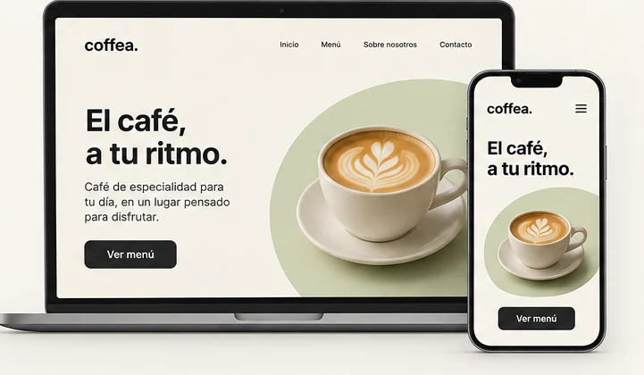

CASO DE ESTUDIO / PROYECTO ACADÉMICO
Coffea.
Una propuesta web, del concepto a la interfaz.
Proyecto de diseño y desarrollo de una interfaz web relacionada con café, con atención a la organización visual, la experiencia de usuario y la adaptación responsive.

01 / CONTEXTO
Problema y enfoque
El desafío de diseño que presenta Coffea consiste en estructurar una interfaz clara para una propuesta relacionada con café, ordenando la información para que pueda explorarse desde distintos dispositivos. El planteo específico del proyecto académico y sus restricciones todavía deben verificarse con sus entregables originales.
02 / OBJETIVO
Una interfaz fácil de recorrer
Organizar visualmente el contenido, mantener una jerarquía legible y prever la adaptación de la interfaz a distintos anchos de pantalla.
03 / PROCESO
Áreas de trabajo
Contenido
Definir qué información mostrar primero y cómo agruparla.
Interfaz
Plantear una jerarquía visual consistente con títulos, secciones y acciones.
Responsive
Adaptar la composición entre pantallas grandes y pequeñas.
Estas áreas describen el enfoque del caso; no constituyen evidencia de entrevistas o pruebas realizadas.
04 / SOLUCIÓN
Propuesta visual
Una presentación sencilla con titular protagonista, botón de exploración y bloques que pueden reorganizarse en una columna al reducir el ancho de la pantalla. La imagen presentada es una exploración visual generada con IA; no representa una captura de la implementación original.
05 / APRENDIZAJES
Qué aprendí con Coffea
Coffea me sirvió para trabajar la organización del contenido, la jerarquía visual y la adaptación de una interfaz a pantallas de distintos tamaños. En este caso muestro una propuesta visual conceptual y explico las decisiones de diseño sin atribuirle pruebas o resultados que no se documentaron.